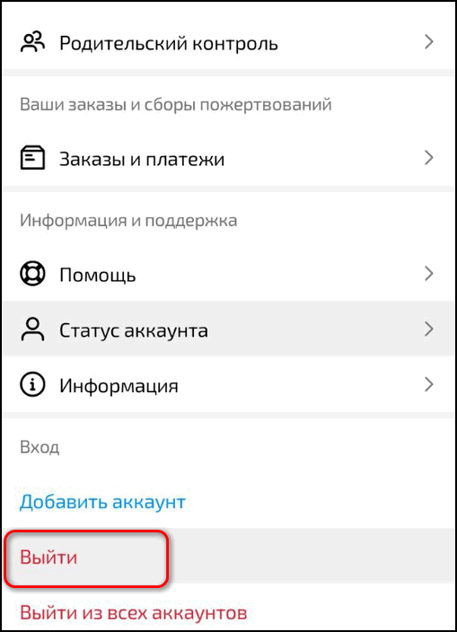
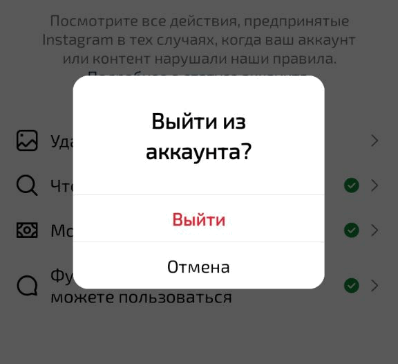
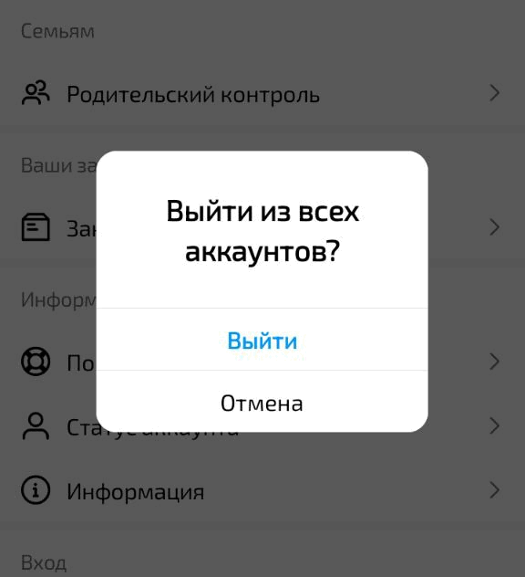
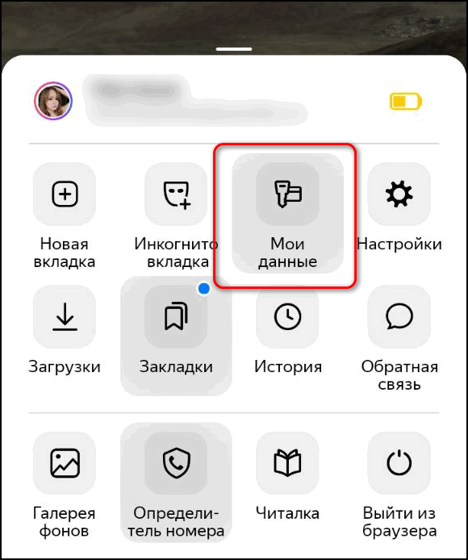
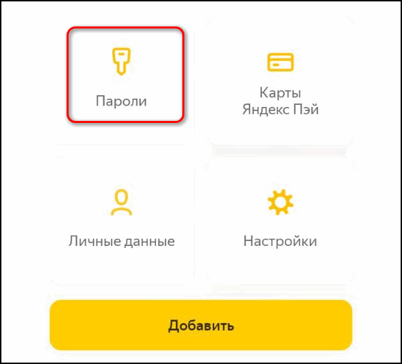

Выйти из учетной записи в Инстаграм: первой и второй

Выйти из аккаунта в Инстаграме* возможно с помощью «Настроек». Будут сохранены данные для авторизации: пароль и логин, чтобы пользователь смог посещать социальную сеть без дополнительных действий и препятствий.
Выйти из первого аккаунта в Инстаграм*
Если у пользователя сразу несколько страниц, то первым шагом будет – выбрать учетную запись откуда нужно выйти. А далее – перейти к настройкам и выбрать: «Выйти из аккаунта». Выходя, страница не удаляется, а персональные сведения будут сохранены, включая последние чаты и переписки. Как выйти из 1 аккаунта:
- Открыть социальную сеть – перейти в свой профиль.
- Убедиться, что это именно та страница, откуда нужно выйти.

- Нажать сверху три полоски – пролистать список настроек вниз: «Выйти из аккаунта».

- Подтвердить действие.
Инстаграм* предупредит, что для следующего посещения придется ввести свои логин и пароль. Поэтому, прежде чем выходить со страницы, нужно вспомнить комбинацию для входа или проверить: сохранены ли данные в браузере, iCloud или GoogleLock.
Переключиться на второй и выйти на Андроиде
Как и выходя с первого, из второго аккаунта отличий в де-авторизации нет. Вначале нужно выбрать страницу, из которой нужно выйти:
- Зайти в Инстаграм* - перейти в свой профиль.
- Нажать сверху по значку своей аватарки.
- Выбрать из выпадающего списка аккаунт.
Далее пользователю предстоит все та же процедура: зайти в настройки и нажать: «Выйти из аккаунта».

Есть всего одна ситуация, когда выйти из аккаунта в Инстаграме* на Айфоне или Андроиде не получается – если страницу заблокировали. Тогда при каждой попытке авторизации пользователя будет выбрасывать на активный профиль. И способ решения – удалить приложение, стереть оставшиеся данные и установить заново с последующей авторизацией.Чтобы выйти со всех аккаунтов, в настройках нужно выбрать: «Выйти везде». Тогда Инстаграм* перебросит на главную страницу, где можно ввести логин и пароль или зарегистрировать новую учетную запись.
Разлогиниться и удалить данные на Айфоне
Чтобы выйти из социальной сети, с последующим удалением сведений, нужно:
- Зайти в «Настройки» телефона – Учетные записи и пароли.
- Пароли программ и сайтов – ввести код безопасности.
- В верхнем правом углу выбрать: «Изменить».
- Выделить те сайты, где нужно удалить.
- Отметить и отредактировать список.
В указанном случае нужно убрать данные от Инстаграма*. Если пользователь стирает информацию, то приложение выйдет из всех аккаунтов автоматически. При следующей попытке входа нужно заново вводить пароль и логин. В системе Android удаление паролей для Instagram* возможно несколькими способами:
- сохранение данных в браузере Яндекс;
- хранение в GoogleLock;
- «Аккаунты» в разделе «Настройки на телефоне».
Предположим, что нужные сведения сохранены в параметрах смартфона:
- Найти приложение «Настройки» - Пароли и аккаунты.
- Найти в списке «Instagram*» - Удалить.
- Подтвердить действие.
Управление такими данными возможно с помощью Яндекс Браузера, если выбран именно этот вариант хранения:
- Зайти в браузер с мобильной версии – снизу три полоски.

Мои данные – найти в списке «Инстаграм*».- Выбрать аккаунт и удалить сведения.

Таким образом пользователь выйдет навсегда и не сможет посетить профиль заново, если не введет логин и пароль. Чтобы выйти из профессионального аккаунта в Инстаграм*, не нужны дополнительные функции. Как и на личном, нужно выбрать вариант: «Выйти» и подтвердить действие. Если же пользователь желает переключиться на личный, чтобы завершить работу с профессиональным, ему нужно перейти к «Инструментам бизнес-профиля/аккаунта автора» и выбрать: «Перейти на личный». Статистика на странице будет отключена, как и возможность продвигать посты, использовать брендированный контент. Но приватный профиль все равно можно будет просмотреть, писала инструкцию на сайте по этой теме ранее.
Как снова войти в профиль
Если владелец страницы просто вышел и желает зайти заново, то ему нужно:
- Зайти в приложение – появится главная.
- Ввести логин и пароль – нажать: «Вход».
- Подождать завершения авторизации.
Чтобы подключить вторую учетную запись:
- Открыть личный профиль – нажать в верхнем левом углу по никнейму.
- Выбрать: «Добавить аккаунт» - указать данные от учетной записи.
Или, в новой версии социальной сети, в настройках появился пункт: «Центр аккаунтов». Там доступно управление и подключение/отключение новых учетных записей. Если при попытке авторизации появилось «Невозможно войти», значит произошла одна из ошибок:
| Неправильный логин и пароль | Проверить данные снова и попытаться ввести |
| Воспользоваться функцией «Забыл пароль» и установить новый | |
| Аккаунт не существует | Страница была заблокирована |
| Отсутствует подключение к интернету | Проверить качество сети или переустановить приложение |
Случается, что при попытке авторизации появляется проблема с подключением к сети и она не всегда связана с тем, что сеть нестабильна или отсутствует. Переустановка приложения и удаление данных пользователя поможет решить большинство проблем со входом в аккаунт и корректной работой социальной сети.